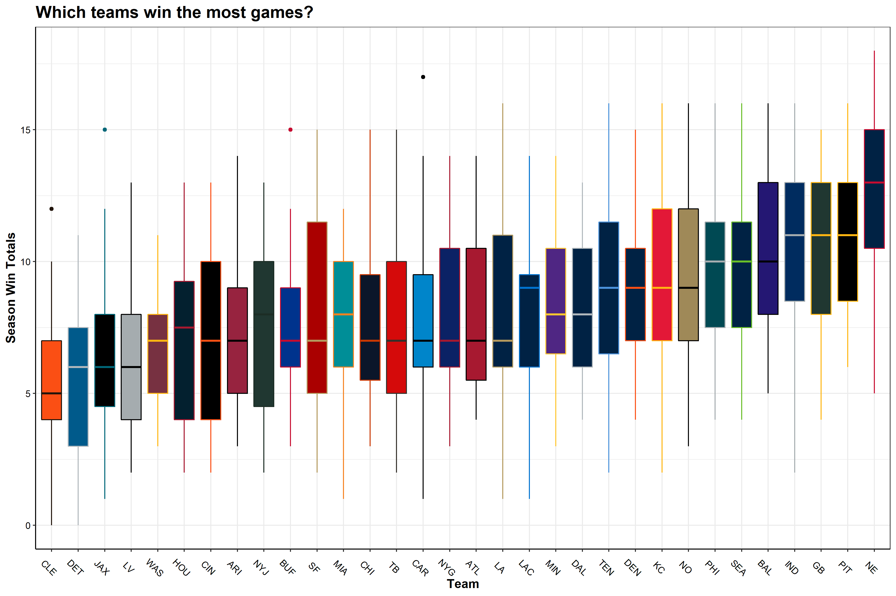
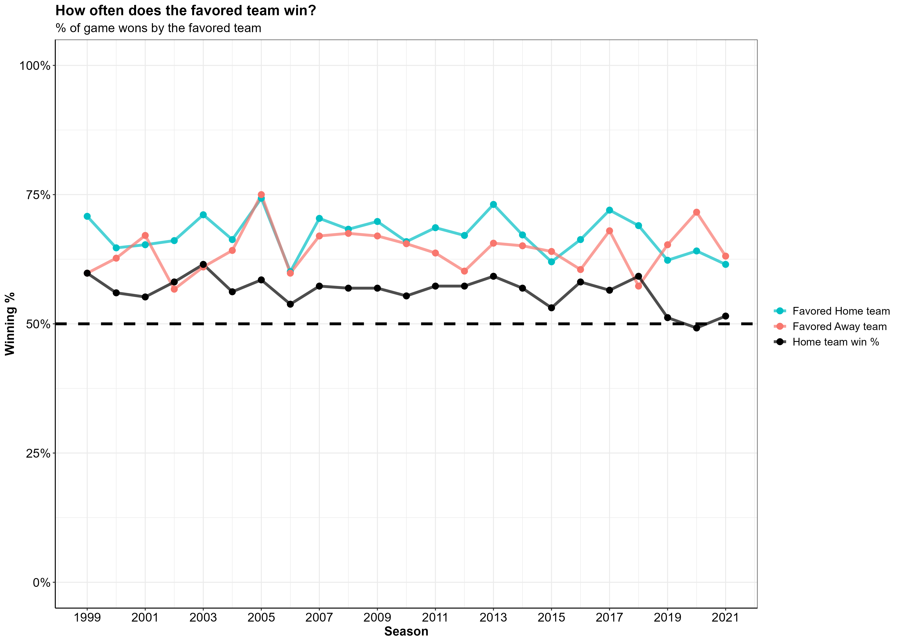

My goal with this project was to try to answer the age-old sports question, “Who is supposed to win this game?”.
I wanted to see if I could use historic information about a team’s offensive and defensive performances to accurately predict whether or not they would win their upcoming game.
All data ingestion, processing, analysis, and modeling was done in R,
with help from the tidyverse and tidymodels
ecosystems.
To start, I pulled NFL play-by-play data together using the
nflfastR R package —performing some cleaning and wrangling
tasks to get the data into a usable format.
I utilized the full play-by-play data sets from 1999-2021, which included some 50,000 plays per season. For each play, there are an additional 372 columns of data giving information about what happened on a given play. In the end I chose to completely omit the 2021 season, using <<<<<<< HEAD it as a holdout set of data to test my models against. Another thing to note is that all the data you see is from the perspective of the home team, and all model predictions indicate a home win or home loss.
======= it as a holdout set of data to test my models against. Another thing to note is that all the data you see is from the perspective of the home team, and all model predictions indicate a home win or home loss. >>>>>>> aac59727f490986eb5c4d2144afba5e09c02e8c3Note: While exploring data and assembling the features I wanted to use for modeling, I created a host of utility helper functions that work off of the play-by-play output data from the nflfastR package. Those helper functions can be found here.
<<<<<<< HEAD =======The function below takes in the NFL play-by-play returned from the
nflfastR::load_pbp() function, and aggregates the data to
game level team statistics.
Now that we’ve gone over the main idea, let’s dig into some of the data and see what we can learn about the NFL and the data we’re working with.
The first thing I wanted to see was the average number of games each NFL franchise won per season between 1999 and 2021. The box plot below shows the NFL franchises on the X axis, arranged by mean annual win total, and the average season win totals on the Y axis. The boxes are colored to match the team colors for each NFL franchise

TLDR; Patriots good, Browns bad (sorry Cleveland!)
This plot mirrors my experience watching the NFL. The New England Patriots are leading the league with an average of 12.6 wins per season. The Patriots are followed by the Steelers, Packers, Colts, Ravens—all teams that have seen consistent success over the last 23 years. At the bottom of the league for average wins per season are the Browns, Lions, Jaguars, and the Raiders.
Next, I wanted to see which NFL teams had the best quarterbacks over the last 23 seasons. To do so, I used the quarterback EPA—a metric that determines how likely a team is to score points as a result of a play, and more specifically, the quarterback’s effect on that play.
If a quarterback does something good (e.g. long completion, runs for a first down), their team is more likely to score points on the ensuing play and expected points are added (EPA is positive). On the other hand, if a QB does something bad (incomplete, takes a big sack), their team is less likely to score points and expected points are removed (EPA is negative).
The box plot below shows the NFL franchises on the X axis, arranged by mean QB EPA per play, and the QB EPA per play on the Y axis. Like the previous plot, the boxes are colored to match the team colors for each NFL franchise.
TLDR; Tom Brady good, long-list-of-Brown’s-QBs bad
This makes sense. Teams like the Patriots, Packers, and Colts are at the top of the league in terms of average QB EPA, given that these teams had great quarterbacks for most of these years (Tom Brady, Brett Favre/Aaron Rodgers, and Peyton Manning/Andrew Luck, respectively).
This plot matches very closely with the season win totals boxplot, shown previously. Safe to say, good quarterback play has a positive impact on winning games.
Next, I wanted to see what the end of season win totals looked like when plotted against average team level statistics for that season (per team, across all 23 seasons). The plot below shows 6 team metrics with the X axis displaying end of season win totals and the Y axis being the season average for each team.
Note: The Y axis values are not meant to be compared across plots, as they differ in units. The purpose of this figure is to show the relationship between team metrics and end-of-season win totals (from top left to bottom right):
| Variable | Y Axis |
|---|---|
| % Time of possession | Average percent of the game the team had possession of the ball |
| QB EPA | EPA value w/ negative values indicating a negative impact on scoring |
| Score Differential | Average Score Differential |
| Scoring Drive | Number of scoring drives per game |
| Third Down % | Average percent of third downs converted to first downs |
| Turnovers | Number of turnovers per game |
Team metrics that relate to having more total wins at the end of the season are:
I created an Elo rating system for each season to create a metric that keeps track of a teams rank relative to the rest of the league. Elo rating systems were first created to rate chess players and are now commonly used in many sports such as American Football, baseball, basketball, etc. Special thanks to the creators of the elo package, your package made my life a lot easier. Here is more information on Elo Rating Systems and its inventor Arpad Elo.
Below is a plot displaying each team on the X axis ordered from lowest to highest average Elo rating per season, with the average Elo rating on the Y axis.
Sadly for Browns fans, we see here the same take-home message that we saw before… Patriots good, Browns bad :’(
Because I will be making predictions on the outcome of NFL games, I thought it best to see how the teams favored for any given game (according to Las Vegas) actually did in those games. How often did the team favored by Las Vegas win? Furthermore, how often does the home team win? How often does a favored home team win? A favored away team?
The black line in the plot below indicates the percent of games won by the home team per season. The aqua blue line shows the percent of games that favored home teams won and the coral color line shows the percent of games that favored away teams won.

Overall, it looks like a favored home team is winning 5-10% more games they’re favored in when compared to a favored away team. Anything else would be surprising, seeing as though playing away from home is an inherent disadvantage.
The features I used in modeling are primarily offensive metrics, with a handful of other off-field factors that I thought might influence a team’s likelihood to win their upcoming game. For all the metrics described below, I created two sets of the same metric—one for the home team and one for the away team.
Note: Later on, you will see features beginning with “opp_”, which simply means that the feature is representing the away team.
Originally, I created many more features for the models to consider (this included time of possession as a percent of the game, points scored in each quarter, turnovers by the defense, and many more). As I made some initial models, however, I found that all of these were not necessary. The features shown below are the ones that had the most predictive power, after I trimmed away some of the fat.
| Variable | Model Variable | Type | Description |
|---|---|---|---|
| Score Differential | score_diff | Numeric | Average score differential throughout the game |
| Third Down Conversion Rate | third_down_pct | Numeric | Percent of 3rd downs converted by offense |
| Turnovers | turnovers | Numeric | Total Turnovers by the offense (Fumbles lost + Interceptions |
| QB EPA | qb_epa | Numeric | Average Quarterback EPA across the whole game |
| Scoring Drive | score_drives | Numeric | Number of drives in a game that result in a score (touchdown/fieldgoal) |
I also thought it important to include some non-football related information that can be known prior to the game. These factors include the number of days of rest between games, the team’s overall, home, and away winning percentages, and the team’s Elo rating.
| Variable | Model Variable | Type | Description |
|---|---|---|---|
| Rest days | rest_days | Numeric | Numeric variable for the amount of rest the team had between games |
| Win % | win_pct | Numeric | Percent of all games won |
| Home Win % | home_win_pct | Numeric | Percent of home games won |
| Away Win % | away_win_pct | Numeric | Percent of away games won |
| Elo rating | elo | Numeric | Elo rating per week in each season, relative to rest of the league |
Once all of the above variables were wrangled, cleaned, and aggregated from the NFL play-by-play data, I was left with a data frame that had one row for every home game played during the season. Each row had two columns for each of the variables shown in the tables above, one for the home team and one for the away team.
nfl_data %>%
glimpse()## Rows: 12,274
## Columns: 26
## $ season <dbl> 1999, 1999, 1999, 1999, 1999, 1999, 1999, 1999, 1999, 1999, 199…
## $ week <dbl> 1, 2, 3, 4, 5, 6, 8, 9, 10, 11, 12, 13, 14, 15, 16, 17, 1, 2, 3…
## $ game_id <chr> "1999_01_ARI_PHI", "1999_02_ARI_MIA", "1999_03_SF_ARI", "1999_0…
## $ team <chr> "ARI", "ARI", "ARI", "ARI", "ARI", "ARI", "ARI", "ARI", "ARI", …
## $ opponent <chr> "PHI", "MIA", "SF", "DAL", "NYG", "WAS", "NE", "NYJ", "DET", "D…
## $ win <dbl> 1, 0, 0, 0, 1, 0, 0, 0, 1, 1, 1, 1, 0, 0, 0, 0, 0, 0, 0, 0, 1, …
## $ rest_days <dbl> 7, 7, 8, 6, 7, 7, 14, 7, 7, 7, 7, 7, 7, 7, 7, 7, 7, 8, 6, 7, 7,…
## $ opp_rest_days <dbl> 7, 7, 8, 6, 7, 7, 14, 7, 7, 7, 7, 7, 7, 7, 7, 7, 7, 8, 6, 7, 7,…
## $ elo <dbl> 1472.495, 1461.762, 1490.000, 1480.760, 1500.288, 1490.280, 148…
## $ opp_elo <dbl> 1472.495, 1461.762, 1490.000, 1480.760, 1500.288, 1490.280, 148…
## $ score_diff <dbl> 1, -3, -14, -28, 11, -14, -24, -5, 4, 4, 10, 4, -25, -10, -23, …
## $ opp_score_diff <dbl> 1, -3, -14, -28, 11, -14, -24, -5, 4, 4, 10, 4, -25, -10, -23, …
## $ turnovers <dbl> 4, 4, 3, 5, 0, 4, 2, 1, 1, 2, 1, 2, 4, 1, 2, 4, 3, 4, 1, 3, 2, …
## $ opp_turnovers <dbl> 4, 4, 3, 5, 0, 4, 2, 1, 1, 2, 1, 2, 4, 1, 2, 4, 3, 4, 1, 3, 2, …
## $ win_pct <dbl> 1.000, 0.500, 0.333, 0.250, 0.400, 0.333, 0.286, 0.250, 0.333, …
## $ away_win_pct <dbl> 1.000, 0.500, 0.500, 0.333, 0.333, 0.333, 0.333, 0.250, 0.250, …
## $ home_win_pct <dbl> 0.000, 0.000, 0.000, 0.000, 0.500, 0.333, 0.250, 0.250, 0.400, …
## $ opp_win_pct <dbl> 1.000, 0.500, 0.333, 0.250, 0.400, 0.333, 0.286, 0.250, 0.333, …
## $ opp_away_win_pct <dbl> 1.000, 0.500, 0.500, 0.333, 0.333, 0.333, 0.333, 0.250, 0.250, …
## $ opp_home_win_pct <dbl> 0.000, 0.000, 0.000, 0.000, 0.500, 0.333, 0.250, 0.250, 0.400, …
## $ qb_epa <dbl> -0.085, -0.180, -0.059, -0.325, -0.100, -0.110, -0.253, -0.140,…
## $ opp_qb_epa <dbl> -0.085, -0.180, -0.059, -0.325, -0.100, -0.110, -0.253, -0.140,…
## $ third_down_pct <dbl> 0.389, 0.231, 0.308, 0.353, 0.154, 0.250, 0.188, 0.167, 0.231, …
## $ opp_third_down_pct <dbl> 0.389, 0.231, 0.308, 0.353, 0.154, 0.250, 0.188, 0.167, 0.231, …
## $ score_drives <dbl> 6, 3, 2, 1, 2, 2, 1, 1, 5, 3, 6, 2, 1, 3, 2, 4, 2, 1, 1, 3, 4, …
## $ opp_score_drives <dbl> 6, 3, 2, 1, 2, 2, 1, 1, 5, 3, 6, 2, 1, 3, 2, 4, 2, 1, 1, 3, 4, …
Now we can take a look at how our game level summary data relates to winning a game.
Below is a correlation matrix that highlights the relationship between variables in the data. We are most interested in the bottom row of this plot, which indicates the correlation between a team winning and all the other variables in the data.
Note: Darker green colors indicate positive correlations while darker red colors indicate negative correlations.
We can see that Elo rating has a relatively strong, positive correlation with winning. This makes a lot of sense, as a higher Elo rating (higher ranked team) is more likely to end up with a win. A positive correlation for a team’s average score differential is also intuitive. If a team, on average, has a higher score differential (they score more points than are scored against them) then they would end up winning more games. The turnover variable has a strong, negative correlation with winning. So if a team, on average, has fewer turnovers, they are also more likely to end up winning the game.
At this point in my analysis, I was working with a posteriori data, so data that was collected after the game (i.e. data not available to someone before the game starts, like the number of turnovers in the game). However, if I wanted to make any useful predictions about the upcoming week, I would need to create a priori data (i.e. data available before the event we want to predict)–which I then did by applying lags to the data, discussed below.
To capture how well a team is doing throughout each season, I created lagged cumulative means for all of the above variables. For each week a team plays, the cumulative mean of the preceding weeks of data are calculated per variable for the upcoming slate of games.
Below is the general method I used to get these lagged cumulative averages. Note that for variables like winning percentage, the lagged cumulative average was not calculated, and rather, only the lagged values were used. In the example code below, the lagged winning percentage and the lagged cumulative average QB EPA is calculated for the Arizona Cardinals (ARI) 2014 season.
nfl %>%
dplyr::filter(season == 2014, team == "ARI") %>%
dplyr::select(season, week, team, win, win_pct, qb_epa) %>%
dplyr::group_by(season, team) %>%
dplyr::arrange(season, week, .by_group = T) %>%
dplyr::mutate(
across(c(win_pct), ~dplyr::lag(.x), .names = "{col}_lag"),
across(c(qb_epa), ~dplyr::lag(dplyr::cummean(.x)), .names = "{col}_lag")
) %>%
dplyr::mutate(across(c(win_pct:qb_epa_lag), round, 2)) %>%
dplyr::ungroup() %>%
dplyr::relocate(season, week, team, win, win_pct, win_pct_lag, qb_epa, qb_epa_lag)## # A tibble: 17 × 8
## season week team win win_pct win_pct_lag qb_epa qb_epa_lag
## <dbl> <dbl> <chr> <dbl> <dbl> <dbl> <dbl> <dbl>
## 1 2014 1 ARI 1 1 NA -0.1 NA
## 2 2014 2 ARI 1 1 1 0.03 -0.1
## 3 2014 3 ARI 1 1 1 0.2 -0.04
## 4 2014 5 ARI 0 0.75 1 -0.16 0.04
## 5 2014 6 ARI 1 0.8 0.75 -0.01 -0.01
## 6 2014 7 ARI 1 0.83 0.8 0.09 -0.01
## 7 2014 8 ARI 1 0.86 0.83 -0.03 0.01
## 8 2014 9 ARI 1 0.88 0.86 -0.02 0
## 9 2014 10 ARI 1 0.89 0.88 -0.11 0
## 10 2014 11 ARI 1 0.9 0.89 -0.06 -0.01
## 11 2014 12 ARI 0 0.82 0.9 -0.34 -0.02
## 12 2014 13 ARI 0 0.75 0.82 -0.09 -0.05
## 13 2014 14 ARI 1 0.77 0.75 0 -0.05
## 14 2014 15 ARI 1 0.79 0.77 -0.14 -0.05
## 15 2014 16 ARI 0 0.73 0.79 -0.25 -0.05
## 16 2014 17 ARI 0 0.69 0.73 0.09 -0.07
## 17 2014 18 ARI 0 0.65 0.69 -0.4 -0.06If you take a look at Arizona’s week 5 game (row 5), the win_pct_lag column for week 5 is represented by the teams win_pct from the previous week—week 4 in this case. In other words, this is the team’s winning percentage leading into the week 5 matchup. In contrast, the qb_epa_lag column was calculated using the mean of qb_epa from weeks 1-4.
I did this lagging process across all variables, such that each row with a game outcome (win/loss) has variables representing team performance up until that point in the season.
Now our data is set up such that all information informing our predictions is data that would be available prior to the upcoming week of games. This is important because information such as the number of touchdowns scored in the game simply isn’t available beforehand, and thus, can’t be used as a predictor in our model. We can only use historic data to inform our predictions.
I decided I wanted to run my data across a panel of 7 different models and see how they all perform against each other
The first step here was to split up the data into testing and training splits (75% training, 25% testing). When splitting, I chose to stratify the data by binary win/loss values to ensure there was an equal proportion of wins and losses in our training/testing splits.
# Set random seed
set.seed(234)
# Partition training/testing data, stratified by win/loss
nfl_split <- rsample::initial_split(nfl_df, strata = win)
# training data split - 75%
nfl_train <- rsample::training(nfl_split)
# testinng data split - 25%
nfl_test <- rsample::testing(nfl_split)# Partition training/testing data, stratified by win/loss
nfl_split## <Training/Testing/Total>
## <4115/1373/5488>Using the recipes package, I made ID variables for
information about the game. I then applied some recipe steps to my
training data. Because I decided to only use home team data, there were
going to be more wins than losses in my dataset (the home team tends to
win more often than the away team: 56% wins / 44% losses). To account
for this slight imbalance, I chose to use the themis
package to upsample my data using the themis::step_smote()
function.
step_zv is applied to all predictors to remove all
variables with only one value (zero-variance)step_normalize is used to normalize all the numeric
predictors in the training data so that they all have a standard
deviation of 1 and a mean of 0step_smote is applied to our dependent
win variable to fix the class imbalance due to having
slightly more wins than losses in the data. The step_smote
function works by upsampling the minority class and generating new,
synthetic data by using the nearest-neighbors of the minority class
instances.Below I create the two recipe steps that we will apply to our training data before modeling.
# Base recipe
base_recipe <-
recipes::recipe(
formula = win ~ .,
data = nfl_train
) %>%
recipes::update_role(
game_id, team, opponent, season, week, new_role = "ID"
)
# Normalize, SMOTE algorithm upsampling recipe
norm_smote_recipe <-
base_recipe %>%
recipes::step_zv(recipes::all_predictors()) %>%
recipes::step_normalize(recipes::all_numeric_predictors())
themis::step_smote(win, over_ratio = 0.9, skip = T)
# zero variance SMOTE algorithm upsampling recipe
zv_smote_recipe <-
base_recipe %>%
recipes::step_zv(all_predictors()) %>%
themis::step_smote(win, over_ratio = 0.9, skip = T)
I created 10 cross-validation folds from the training data. As I did with the initial training/testing split, I made sure to create stratified resamples using the win/loss variable to ensure the same proportion of wins and losses appear in each CV fold as the do in the original data.
# Set random seed
set.seed(432)
# Cross-validation folds
nfl_folds <- rsample::vfold_cv(nfl_train, v = 10, strata = win)
Using the workflowsets I created a
workflow_set object containing each of the data
preprocessing recipes and corresponding model specifications.
# Workflow set of candidate models
nfl_wfs <-
workflowsets::workflow_set(
preproc = list(
kknn_rec = norm_smote_recipe,
glmnet_rec = norm_smote_recipe,
xgboost_rec = zv_smote_recipe,
nnet_rec = norm_smote_recipe,
svm_lin_rec = norm_smote_recipe,
svm_poly_rec = norm_smote_recipe,
svm_rbf_rec = norm_smote_recipe
),
models = list(
knn = knn_spec,
glmnet = glmnet_spec,
xgboost = xgboost_spec,
nnet = nnet_spec,
svm_lin = svm_lin_spec,
svm_poly = svm_poly_spec,
svm_rbf = svm_spec
),
cross = F
)
The next step was to tune hyperparameters for each of our models.
Using the tune package, I applied the
tune::tune_grid() function across the workflowset object
containing the model recipes and specifications. Twenty random candidate
parameters were then created using the
dials::grid_latin_hypercube() function from the
dials package.
The training/testing phase is the most time consuming and resource intensive process of a machine learning workflow. In order to speed up the process, I ran the tuning process across multiple cores on my computer—making use of the computer’s multiple processors
To get another boost in processing time, I made use of the
finetune package and the
finetune::tune_race_anova function. This applies a repeated
measure ANOVA model to iteratively eliminate tuning parameters that are
unlikely to yield the best results. Combining parallel
processing and racing methods can improve
processing times by ~35
fold.
# Choose metrics
met_set <- yardstick::metric_set(
roc_auc, accuracy, mn_log_loss,
sensitivity, specificity, j_index
)
# Set up parallelization, using computer's other cores
parallel::detectCores(logical = FALSE)
modeltime::parallel_start(6, .method = "parallel")
# Set Random seed
set.seed(589)
# Efficient Tuning of models in workflowset
nfl_wfs <-
nfl_wfs %>%
workflowsets::workflow_map(
"tune_race_anova",
resamples = nfl_folds,
grid = 20,
metrics = met_set,
control = finetune::control_race(
verbose = TRUE,
save_pred = TRUE,
verbose_elim = TRUE,
save_workflow = TRUE
),
verbose = TRUE
)
# Start parallel clusters
modeltime::parallel_stop()
Now we can see how our models did compared to one another to decide which is best suited for making accurate predictions. The plots below show how the 7 models performed on the set of resampling data.
If you take a look at the ROC AUC and mean log loss plots the best performing models are the Logistic Regression (logistic_reg), the Support Vector Machines (svm_linear/svm_poly/svm_rbf), the Multilayer Perceptron (mlp) and the Gradient Boosted Decision Trees (boost_trees).
In particular, boost_trees performs at approximately the same level as the mlp model, when it comes to correctly predicting wins (sensitivity) and correctly predicting losses (specificity), without the increase in log loss.
A standard threshold for log loss as it pertains to binary predictions is ~0.69; anything higher than that and you aren’t beating the probability of a 50-50 guess. The table below shows the mean log loss for each mode, the best being 0. The larger the number gets the worse the model is at predicting the correct outcome.
The table below shows the performance metrics for each model.
| model | rank | accuracy | mean_log_loss | roc_auc | sensitivity | specificity |
|---|---|---|---|---|---|---|
| logistic_reg | 1 | 0.67 | 0.60 | 0.74 | 0.71 | 0.62 |
| svm_linear | 2 | 0.67 | 0.60 | 0.74 | 0.70 | 0.62 |
| svm_poly | 18 | 0.67 | 0.60 | 0.74 | 0.70 | 0.63 |
| svm_rbf | 19 | 0.67 | 0.60 | 0.73 | 0.70 | 0.62 |
| mlp | 20 | 0.66 | 0.63 | 0.73 | 0.67 | 0.65 |
| boost_tree | 22 | 0.66 | 0.60 | 0.73 | 0.68 | 0.64 |
| nearest_neighbor | 28 | 0.62 | 0.80 | 0.66 | 0.63 | 0.61 |
Looking at variable importance plots (generated from the
vip package) can give us an idea of which variables are
most important to our models.
Below are the variable importance scores for the Logistic Regression, XGBoost, and Multilayer Perceptron models. If you want to read more about what makes up the variable importance scores for each model you can click here.
Note: vip does not currently support
SVM models, hence why no variable importance plots are shown for the
Linear SVM.
The most important variables in both models looks to be the team’s Elo ratings, the cumulative average score differential and the opponent’s winning percentage.
Next, I selected tuning parameters for each model that had the best performance metrics on the data resamples. Using these model parameters, I refit each model one last time using just the initial data split (fitting on training data and evaluating on testing data). I then used the final fitted models to make predictions. Let’s check out the results!
And in table form…
| Model | Data split | accuracy | mean_log_loss | roc_auc | sensitivity | specificity |
|---|---|---|---|---|---|---|
| nearest_neighbor | train | 0.69 | 0.57 | 0.77 | 0.68 | 0.69 |
| nearest_neighbor | test | 0.63 | 0.85 | 0.67 | 0.63 | 0.63 |
| logistic_reg | train | 0.67 | 0.59 | 0.74 | 0.70 | 0.63 |
| logistic_reg | test | 0.69 | 0.58 | 0.76 | 0.72 | 0.65 |
| boost_tree | train | 0.71 | 0.60 | 0.78 | 0.73 | 0.68 |
| boost_tree | test | 0.69 | 0.61 | 0.75 | 0.72 | 0.66 |
| mlp | train | 0.67 | 0.62 | 0.74 | 0.69 | 0.65 |
| mlp | test | 0.69 | 0.62 | 0.76 | 0.70 | 0.67 |
| svm_linear | train | 0.67 | 0.59 | 0.74 | 0.70 | 0.63 |
| svm_linear | test | 0.69 | 0.58 | 0.76 | 0.72 | 0.65 |
| svm_poly | train | 0.68 | 0.59 | 0.74 | 0.71 | 0.63 |
| svm_poly | test | 0.69 | 0.58 | 0.76 | 0.72 | 0.65 |
| svm_rbf | train | 0.68 | 0.58 | 0.75 | 0.72 | 0.64 |
| svm_rbf | test | 0.69 | 0.58 | 0.76 | 0.72 | 0.65 |
You can see that the nearest neighbor model sees a big drop in mean log loss between training and testing data. Besides this, the remaining models appear to perform similarly with both training and testing data, which gives us some more confidence that these models would perform similarly in the real world.
Receiver Operator Characteristic curves, (ROC curves) are a way of understanding how well a model is predicting the True Positive events vs. the False Positive events.
In our scenario of predicting a team’s win, a True Positive event would be where the model predicts a win and the team actually wins. A False Positive event, in contrast, would be where the model predicts a win and the team actually loses.
The True Positive Rate (TPR) is on the Y axis and the False Positive Rate (FPR) is on the X axis of the graph below.
The TPR, or sensitivity, along the Y axis indicates the probability that the model predicted a win and the team actually won. While the FPR, or 1 - specificity, along the X axis indicates the probability that the model predicted a win and the team actually lost.
The closer the ROC curve to the top left corner of the plot, the better the model is at correctly classifying the data. A perfect ROC Curve would be at a 90 degree angle along the top left corner of the plot, and would indicate that the model is able to perfectly classify the data correctly.
roc_curve <-
roc_df %>%
ggplot2::ggplot() +
ggplot2::geom_abline(
lty = 2,
alpha = 0.7,
color = "black",
size = 1) +
ggplot2::geom_line(
ggplot2::aes(
x = 1 - specificity,
y = sensitivity,
color = model),
alpha = 0.6,
size = 1
) +
ggplot2::scale_color_manual(
values = c("red3", "darkorange", "forestgreen",
"hotpink", "dodgerblue3", "cyan3", "midnightblue")
) +
ggplot2::coord_equal() +
ggplot2::labs(
title = "ROC Curves",
subtitle = "Test data",
x = "False Positive Rate (1 - Specificity)",
y = "True Positive Rate (Sensitivity)",
col = "Models"
) +
apatheme It looks like all of the models are performing similarly on the test data except for the K-nearest neighbors model, which is notably worse at classifying the data. This ROC curve visually confirms what we saw in the model metric summary table. Given these metrics, I will drop the K nearest neighbors and focus on the rest of the models. Additionally, I will only use the best performing SVM model which looks to be the Linear SVM.
A confusion matrix is a helpful way of understanding where a classification model is correct or incorrect in it’s predictions. At first glance, I thought the name confusion matrix came from the fact that I was confused. Turns out the name has more meaning, its purpose is to highlight where a classification model is confused in its predictions…
A few notes from looking at this confusion matrix: - All three of my models do a better job of correctly predicting losses in the test data than Las Vegas did in the same games
Las Vegas’s predicted more correct game winners than any of the models.
All of the models made more correct predictions than Las Vegas (higher specificity), doing a better job at correctly predicting losses than Las Vegas, while being worse at predicting wins
The Multilayer Perceptron model correctly predicted nearly 100 more losses than the Las Vegas model!
~35% of correct predictions are losses, the remaining ~65% are correctly predicted wins (~43% of the test data were actual losses so this isn’t too far off)
For this data/domain, having the model predict more wins than losses makes logical sense, the home team tends to win more often than they lose, and our data is entirely from the home team perspective
The models excel at correctly predicting the True Negative cases, and correctly identify the True positive cases at a slightly lower rate than Las Vegas does
In general, the models have the most trouble classifying the False Positive cases
And here are the summary statistics for these confusion matrices
| Model | Accuracy | Misclassification | Precision | Sensitivity | Specificity |
|---|---|---|---|---|---|
| Vegas | 0.67 | 0.33 | 0.79 | 0.68 | 0.64 |
| Logisitc Reg. | 0.69 | 0.31 | 0.72 | 0.73 | 0.63 |
| SVM RBF | 0.69 | 0.31 | 0.72 | 0.73 | 0.64 |
| XGBoost | 0.69 | 0.31 | 0.71 | 0.73 | 0.63 |
| MLP | 0.69 | 0.31 | 0.70 | 0.74 | 0.63 |
Taking a look at just the SVM model in the table above, we see a sensitivity of ~0.73, which means the SVM model correctly predicted the home team to win 73% of the time. The specificity of 0.64 indicates that 64% of home team losses were correctly predicted. Overall, the models all had comparable performance metrics and appear to correctly identify wins and losses for the home team at the same rate.
Let’s look at how the models performed on the 25% of the data that we set aside for testing. We can now generate predictions for the 1373 games in our testing dataset, and calculate the percent of games per year where our models correctly predicted the outcome (shown in the graph below).
Further, let’s apply the fitted models to the 2021 season holdout data to see how those predictions fare against Vegas’. In doing so, we can visualize the percent of 2021 games Las Vegas correctly predicted and compare it to that of the ML models.
In the graph below, the X axis has the percent of correct predictions and the Y axis is each week of the NFL season.
Looks like our predictions are right in line with Vegas! Some weeks we do a little better than Vegas, some weeks a little worse.
The table below shows actual outcomes of the 2021 season, the favored team according to Las Vegas, and predictions from our fitted models. Green cells indicate that the prediction lined up with the actual game outcome, whereas red means that the prediction was incorrect. Note that the table is from the home team’s perspective (i.e. a win in the actual_outcome column means the home team won).
First, let’s check out a week where our models outperformed Vegas.
All of our models did better than Vegas in week 12 (i.e. we correctly predicted the outcome more that Vegas did)
# A week with more correct predictions than Las Vegas
good_week <-
pred_table %>%
dplyr::filter(week == 12)
# Color code TP and TN as green and FP and FN as red
good_week_color <- ifelse(good_week[, c(5, 6, 7, 8, 9)] == good_week[, c(4, 4, 4, 4, 4)],
"#85E088", "indianred2")
# Flextable with color coding
good_week %>%
flextable::flextable() %>%
flextable::bg(j = c(5:9), bg = good_week_color) %>%
flextable::add_header_row(
values = c(" ", "Vegas", "Models"),
colwidths = c(4, 1, 4)
) %>%
flextable::theme_box() %>%
flextable::align(align = "center", part = "all") %>%
flextable::fit_to_width(max_width = 6)
| Vegas | Models | ||||||
week | home_team | away_team | actual_outcome | vegas_pred | log_reg_pred | svm_pred | xgb_pred | mlp_pred |
12 | BAL | CLE | win | win | loss | loss | win | loss |
12 | CIN | PIT | win | win | win | win | win | win |
12 | DAL | LV | loss | win | win | win | win | win |
12 | DEN | LAC | win | loss | win | win | loss | win |
12 | DET | CHI | loss | loss | loss | loss | loss | loss |
12 | GB | LA | win | loss | loss | loss | win | loss |
12 | HOU | NYJ | loss | win | win | loss | loss | loss |
12 | IND | TB | loss | loss | loss | loss | loss | loss |
12 | JAX | ATL | loss | loss | loss | loss | loss | loss |
12 | MIA | CAR | win | loss | win | win | win | win |
12 | NE | TEN | win | win | win | win | win | win |
12 | NO | BUF | loss | loss | loss | loss | loss | loss |
12 | NYG | PHI | win | loss | loss | loss | loss | loss |
12 | SF | MIN | win | win | win | win | win | win |
12 | WAS | SEA | win | loss | win | win | win | win |
| Vegas | Logistic Reg. | SVM Linear | XGBoost | MLP |
|---|---|---|---|---|
| 8 | 10 | 11 | 12 | 11 |
And now looking at week 4 where the models performed worse than Vegas…
# A week with fewer correct predictions than Las Vegas
bad_week <-
pred_table %>%
dplyr::filter(week == 4)
# Color code TP and TN as green and FP and FN as red
bad_week_color <- ifelse(bad_week[, c(5, 6, 7, 8, 9)] == bad_week[, c(4, 4, 4, 4, 4)],
"#85E088", "indianred2")
# Flextable with color coding
bad_week %>%
flextable::flextable() %>%
flextable::bg(j = c(5:9), bg = bad_week_color) %>%
flextable::add_header_row(
values = c(" ", "Vegas", "Models"),
colwidths = c(4, 1, 4)
) %>%
flextable::theme_box() %>%
flextable::align(align = "center", part = "all") %>%
flextable::fit_to_width(max_width = 6)
| Vegas | Models | ||||||
week | home_team | away_team | actual_outcome | vegas_pred | log_reg_pred | svm_pred | xgb_pred | mlp_pred |
4 | ATL | WAS | loss | loss | loss | loss | win | loss |
4 | BUF | HOU | win | win | win | win | win | win |
4 | CHI | DET | win | win | loss | loss | win | loss |
4 | CIN | JAX | win | win | win | win | win | win |
4 | DAL | CAR | win | win | win | win | win | win |
4 | DEN | BAL | loss | win | win | win | win | win |
4 | GB | PIT | win | win | win | win | win | win |
4 | LA | ARI | loss | win | win | win | win | win |
4 | LAC | LV | win | win | loss | loss | loss | loss |
4 | MIA | IND | loss | win | loss | loss | loss | loss |
4 | MIN | CLE | loss | loss | loss | loss | win | loss |
4 | NE | TB | loss | loss | win | loss | loss | loss |
4 | NO | NYG | loss | win | win | win | win | win |
4 | NYJ | TEN | win | loss | loss | loss | loss | loss |
4 | PHI | KC | loss | loss | win | win | loss | win |
4 | SF | SEA | loss | win | win | win | win | win |
| Vegas | Logistic Reg. | SVM Linear | XGBoost | MLP |
|---|---|---|---|---|
| 10 | 7 | 8 | 8 | 8 |
One of the biggest limitations to these models, is that there is no accounting for injuries to players. A team that loses its starting quarterback or any key players to injury before or during the game is going to likely have a much worse shot of winning a game. I considered created a binary variable that indicated whether a team was missing its starting quarterback or was making a transition to a different quarterback. However I didn’t end up doing this because I didn’t have an easily accesible data with this information. I figured I could create my own variable indicating if a quarterback change was made using snap percentages but I didn’t go down this path. I may address this in future, if I get an idea of how I want to do it.
I also wanted to include two other variables, bad_win_pct and good_win_pct, which would indicate the percent of games a team wins against teams under .500 and teams over .500, respectively. I didn’t think of this them until I was finishing this write up, and chose not to go back and add them in. I’m planning on exploring these variables further in the future.
I am currently working on a building out an REST API that will scrape current game data, feed this data into one of these models, and return predictions to end users. My goal is to have this operational by week 2 of the 2022 season.
We did it! We implemented NFL data into a Machine learning workflow and generated some reasonably accurate predictions.
To recap what happened for the skimmers out there:
I’m not a huge sports bettor, but I really just wanted to make a model that could potentially make me money if I was.